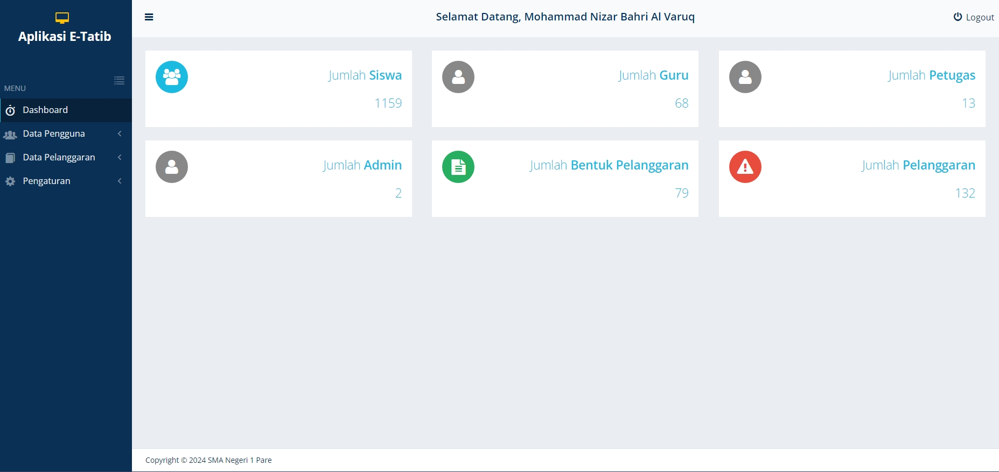
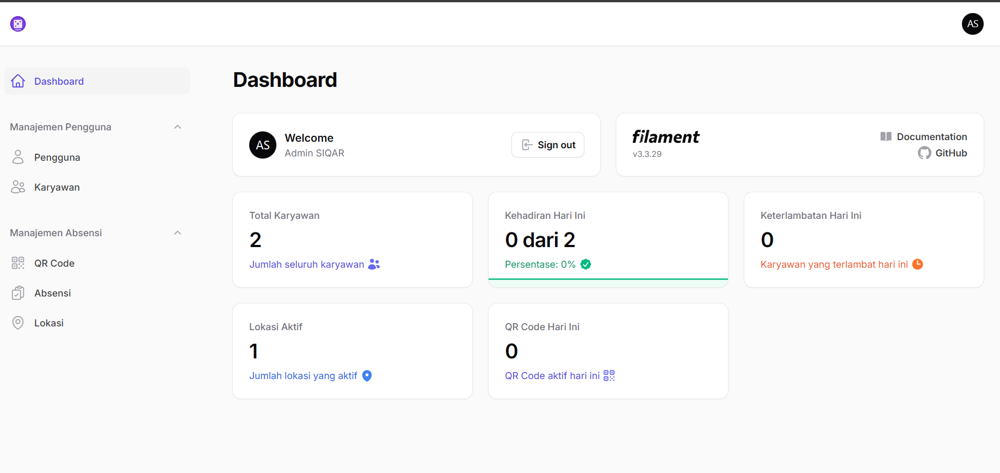
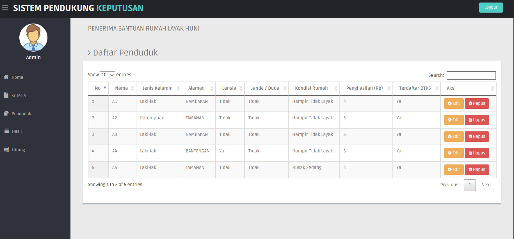
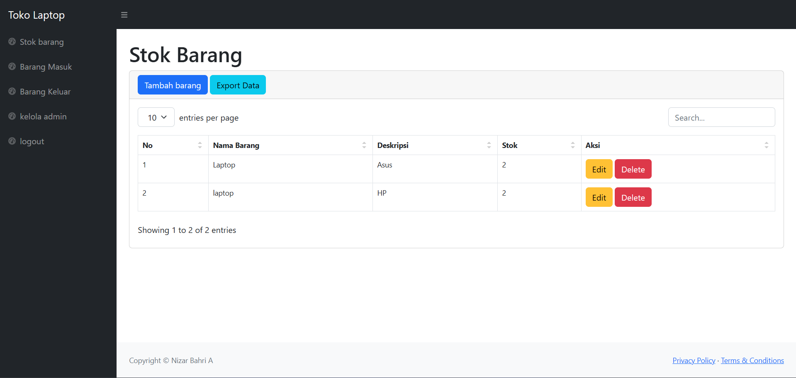

E-Tata Tertib – Monitoring Pelanggaran Siswa

Sistem monitoring disiplin siswa berbasis web yang menampilkan grafik, statistik,
dan laporan pelanggaran secara real-time. Dibuat untuk mempermudah sekolah
dalam pengelolaan data pelanggaran siswa.
🔹 Teknologi
- PHP Native
- MySQL
- Bootstrap
- Chart.js
🔹 Fitur
- Dashboard grafik pelanggaran
- Manajemen data pelanggaran
- Rekap per siswa & per kelas
- Filter & pencarian data
Aplikasi Absensi Berbasis QR Code

Aplikasi ini di gunakan untuk mencatat kehadiran mahasiswa atau karyawan dengan scan QR Code
🔹 Teknologi
- Flutter(dart)
- MongoDB
- Laravel
- MySQL
- Geolocator Package
🔹 Fitur
- Dashboard interaktif
- Manajemen pelanggan
- Laporan layanan harian
- Monitoring request
Sistem Pendukung Keputusan – Metode MOORA

Aplikasi SPK dengan metode MOORA untuk menentukan penerima bantuan, dilengkapi
penilaian kriteria, perankingan, dan hasil keputusan otomatis.
🔹 Teknologi
- PHP
- Java Script
- MySQL
- Bootstrap
🔹 Fitur
- Input kriteria & bobot
- Perhitungan otomatis MOORA
- Peringkat hasil keputusan
- Dashboard penduduk
Sistem Stok Barang

Sistem inventory sederhana untuk mengelola stok barang masuk dan keluar,
lengkap dengan dashboard transaksi dan manajemen admin.
🔹 Teknologi
- PHP Native
- JAVASCRIPT
- MySQL
- Bootstrap
🔹 Fitur
- Barang masuk & keluar
- Manajemen stok
- Manajemen admin
- Laporan stok
← Back to Portfolio